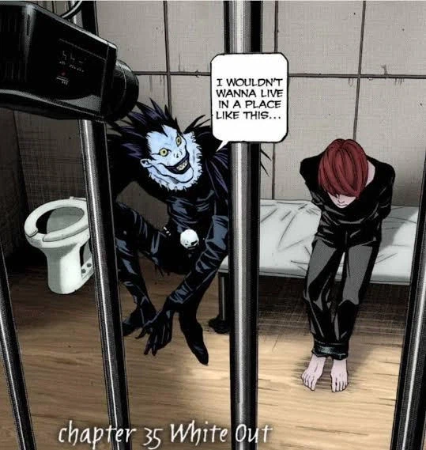
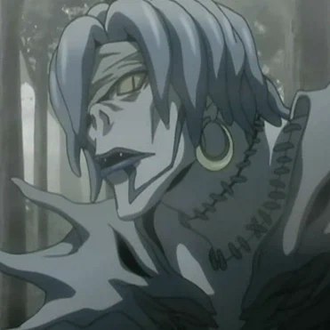

라이토가 50일 동안 감시 감금 당했을 때
사실상 라이토의 무고가 증명되자
L이 내린 결론은
"라이토가 키라가 아닐리는 없다.
그럼 시발 키라의 능력은 빙의형으로 옮겨다니나?"
라이토의 무고가 증명된 이런 상황에서도
절대로 라이토가 키라가 아닐거라고는 상정을 안함.

4
가짜 규칙이 적힌 데스노트를 얻고
렘과 조우할 때 바로 처음 물어본게
" '노트를 사용한 사람이 13일 동안 노트를 또 안 쓰면 죽는다...'
이 규칙 이거 가짜 아닌가?
이게 가짜면 라이토 키라 확정인데?
사신 씨, 누가 노트에 규칙을 가짜로 적을 수 없나요?"
판타지 아이템을 처음 맞닥뜨린 상황에서 그 규칙을 의심하는 모습까지 보여줌.
얘는 죽어도 라이토=키라를 내려놓을 생각이 없음.
왜냐하면 최근에 일어난 일이 워낙 괴이하고 모순적이라지만
라이토가 키라면 모든게 맞아 떨어지니까.
이양반는 초반에 감시카메라로 라이토 볼때 라이토가 딸을 쳐도
"키라새끼 용의주도하네" 라고 넘어갈 양반임.
댓글
수집 당시 댓글 12개
드립은역시개드립 · 6 시간 전
이거 첨부터 엘이 병신인게 키라가 죄수 죽이도로 유도하고 엘이 이제 널 찾겠다 선언하지 않나? 그냥 은밀하게 찾았으면 다 이길게임을ㅋㅋ
안녕하수수깡 · 4 시간 전
테니스 장면에서 어느정도 납득되지않나? 본인도 모르는 유치한 승부욕이 L에게도 있었던거지
씨버러버 · 4 시간 전
그 린드L테일러 내세워서 한 방송 말하는거면 그거 아니었으면 그렇게 급진적으로 수사망 좁히지도 못했고 용의선상에 라이토 들어가지도 않았음.
빠른인정빌런 · 3 시간 전
ㅇㅇ 그래서 사실상 라이토 최악의 실수지. 수사범위가 너무 좁아져버렸으니
병신이니이해부탁 · 5 시간 전
의심의 얼룩은 쉽게 지워지지 않는다 아쎄이!!!
일동안밥먹기 · 5 시간 전
99.95%확신 상태였다던데 ㅋㅋㅋ 0.05%도 자기가 틀린게 아니라 증거를 못찾을 확율
김펭귄 · 5 시간 전
무죄추정은 개좆까잡수신 류자키양반ㅋㅋㅋ
MS08소대 · 5 시간 전
L의 라이토 의심은 후반 FBI 사건부터 시작된 게 아니라 사실 초반 린드 L 테일러 사건 직후부터 봐야 함 L은 테일러를 죽인 걸 통해 키라가 방송을 보고 즉시 살인할 수 있고 방송의 지역적 범위까지 파악할 수 있다는 걸 알아냄 이후 키라가 일반적인 범죄자 정보만 아는 게 아니라 경찰이 가진 수사 정보까지 알고 있는 것 같다는 점에 주목하고 키라가 경찰 내부 또는 경찰 관계자를 통해 정보를 얻고 있다고 추리함 그 과정에서 일본 경찰 관계자들의 가족까지 조사 대상이 좁혀지고 그중 야가미 소이치로의 아들인 라이토가 키라의 프로파일과 지나치게 잘 맞아떨어짐 나이와 지능, 성적, 경찰 관계자인 아버지를 통한 정보 접근 가능성까지 전부 들어맞으니 L이 라이토를 집중적으로 의심하기 시작한 것 그래서 라이토 방에 감시카메라를 설치한 시점부터는 단순히 라이토도 용의자 중 하나가 아니라 "라이토가 키라라는 가설을 검증하는 단계"에 가까움 그러니까 감시당할 때 라이토가 야한잡지를 보고 딸딸이를 쳤으면 무죄라는 밈도 L한테는 별 의미가 없음 감시를 의식하고 일부러 평범한 행동을 하는 것일 수도 있다라고 생각할 인간임 더 중요한 게 50일 감금임 라이토가 물리적으로 살인을 할 수 없는 상황이 되자 보통은 라이토는 키라가 아니다라고 결론내려야 하는데 L은 거기서도 라이토=키라 가설을 버리지 않음 그럼 키라의 능력이 다른 사람에게 넘어간 건가? 그리고 데스노트의 13일 규칙이 나오자 다른 사람들은 그 규칙을 근거로 라이토와 미사를 무혐의로 보는데 L은 오히려 이 규칙 자체가 가짜라면?을 의심함 가짜라면 50일 감금이 라이토의 무죄를 증명하지 못하게 되고 기존의 라이토=키라 가설이 다시 살아나기 때문 결국 L은 라이토를 믿었던 게 아니라 라이토가 키라라는 자신의 추리를 끝까지 버리지 않았던 것임 정확히 말하면 법적으로 확정한 건 아니지만 L의 내부 추리에서는 초반부터 라이토를 압도적으로 유력한 키라로 놓고 라이토가 키라가 아니라는 증거가 나올 때마다 그 증거까지 설명할 새로운 가설을 만들어가며 추적한 것에 가까움 그래서 L한테는 라이토가 감시카메라 앞에서 뭘 하든 별로 중요하지 않음 라이토가 딸을 쳐도 무죄가 아니라 키라인데 딸도 치는구나 하고 넘어갈 인간이 L이지...
씨버러버 · 4 시간 전
경찰들이 L한테 "라이토가 키라일 확률은?" 질문하면 맨날 "5%입니다" 이지랄 했는데, 사실 5%가 존나게 높은 수치임. 오직 라이토만이 5%의 가능성을 갖고 있었고, 라이토를 제외한 그 누구도 1%의 가능성조차 갖고 있지 않았기 때문에ㅋㅋㅋㅋ
빠른인정빌런 · 3 시간 전
ㄹㅇ 유두딸 항문자위 여동생 상상딸 치고있었어도 의심안했을수가 없음
nhdta · 1 시간 전
음... 완전 미친새끼군. 그래도 라이토는 키라입니다 ㅎ
빈유만세 · 4 시간 전
이미 확신은 했고 이제 증명할 물증을 찾으려고 했던거였는데 찾기전에 결국...